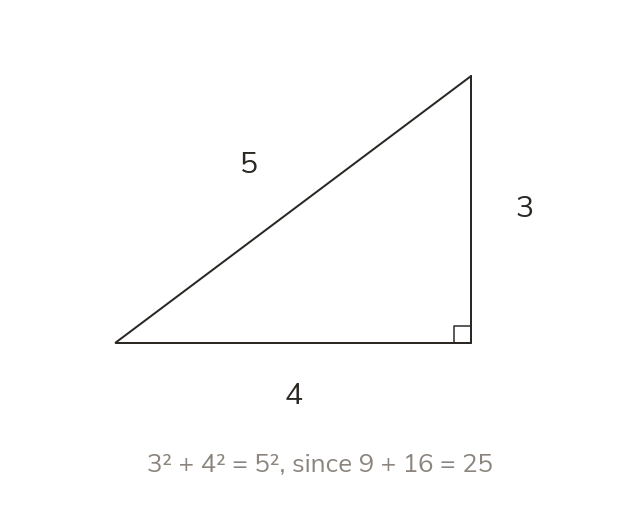

The squares on the sides
In a right-angled triangle,
The hypotenuse squared is the sum of the other two squares.
In a right-angled triangle, the square of the hypotenuse equals the sum of the squares of the two shorter sides. This is written where is the hypotenuse.